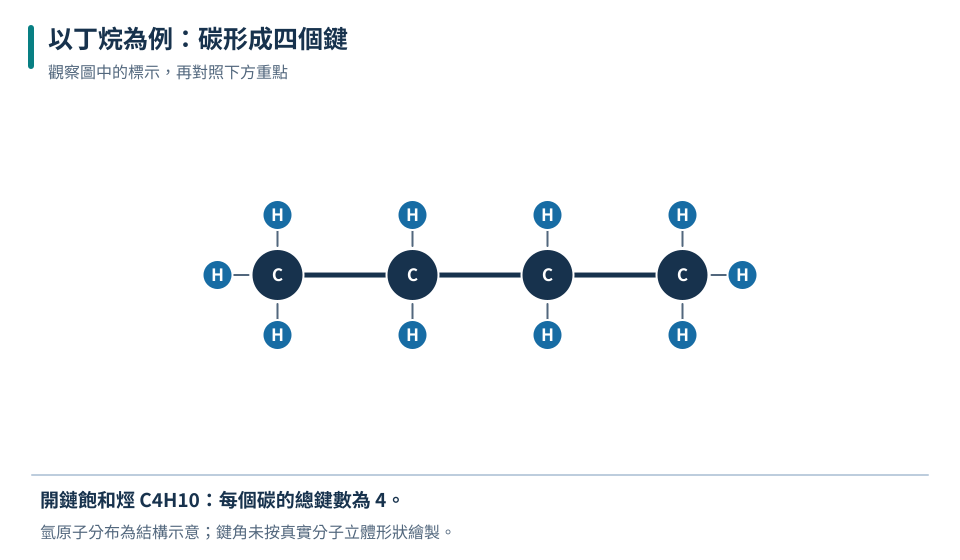
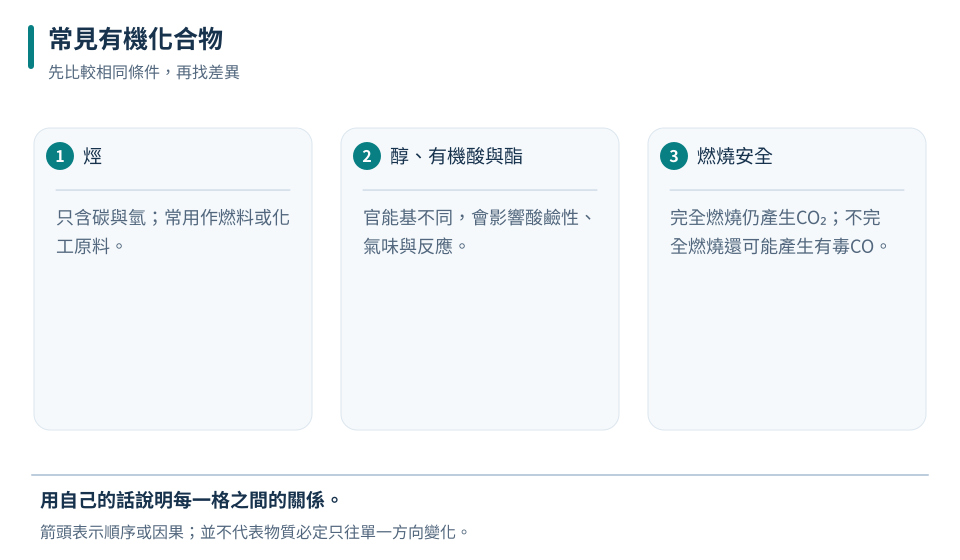
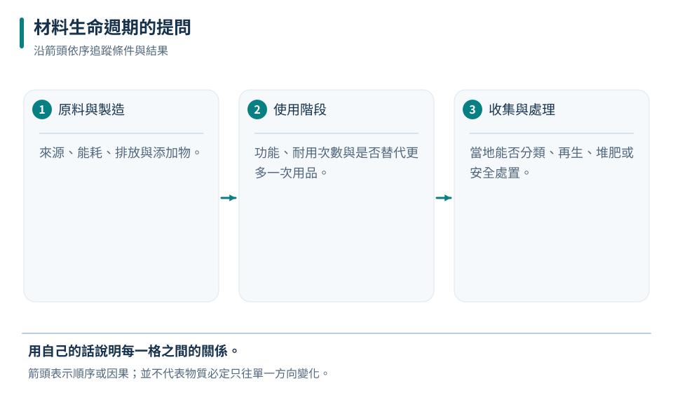

碳骨架多樣
碳能形成穩定鏈與環，使有機物種類繁多。
八下 · 化學 · 第 5 章
燃料、酒精、醋、塑膠與清潔用品，都和含碳化合物有關。本章不靠背長串名稱，而是從碳的鍵結能力、官能基、燃燒與材料生命週期，建立辨認、比較與安全使用有機物的能力。
先備概念：會讀化學式與配平簡單反應式、知道元素、化合物與混合物的差別
LEARN & EXPLAIN
有機化合物多以碳為骨架，常和氫、氧、氮等元素結合。碳原子可以彼此連接成鏈、支鏈或環，因此少數元素就能形成大量不同物質。含碳不一定屬有機物；二氧化碳、碳酸鹽、一氧化碳等在國中分類中通常列為無機化合物。
同一分子式可能因原子連接方式不同而有不同性質，稱為異構現象。物質性質不只由「含哪些元素」決定，也受原子數目與排列影響。辨認有機物應以組成與結構資料為依據，不能只用是否天然、是否可燃或是否有味道判斷。
碳能形成穩定鏈與環，使有機物種類繁多。
CO₂、CO、碳酸鹽等常分類為無機物。
分子式相同也可能因排列不同呈現不同性質。

骨架只顯示碳的連接方式；氫等原子省略。不同骨架可帶來不同物性。
不能用含碳一項直接判定；CO₂通常歸為無機物。
「有機」不是「天然、健康」的同義詞；人工合成物可為有機物，天然物也可能有毒。
LEARN & EXPLAIN
只由碳、氫組成的化合物稱烴，甲烷是最簡單的烴。醇類常含羥基，乙醇能與水互溶且易燃；有機酸如醋酸可使溶液呈酸性；醇與有機酸在適當條件下可形成酯，許多酯具有特殊氣味。官能基能協助比較性質，但實際溶解度、沸點與反應性還受整個分子大小及結構影響。
有機物完全燃燒時，碳主要形成CO₂，氫形成H₂O；氧不足或混合不良時可能生成CO與碳煙。CO無色無味且有毒，燃燒設備必須通風、定期維護。看到黃色火焰或煙不應直接用手靠近判斷，更不可在密閉空間燃燒。
只含碳與氫；常用作燃料或化工原料。
官能基不同，會影響酸鹼性、氣味與反應。
完全燃燒仍產生CO₂；不完全燃燒還可能產生有毒CO。
| 物質 | 化學式或特徵 | 常見連結 |
|---|---|---|
| 甲烷 | CH₄，烴 | 燃料；燃燒需通風 |
| 乙醇 | C₂H₅OH，醇 | 溶劑、燃料；易燃 |
| 醋酸 | CH₃COOH，有機酸 | 食醋成分之一 |
| 酯 | 含特定官能基 | 香味、溶劑或材料 |

用途不代表可以直接食用或接觸；濃度、純度與添加物都會影響安全。
需要4個O₂，生成2個CO₂與4個H₂O。
酒精消毒液不是濃度越高一定越有效；用途要遵循產品標示，也不能飲用工業酒精。
LEARN & EXPLAIN
塑膠是高分子材料的一大類，具有質輕、耐腐蝕、易成形等優點，但不同塑膠的耐熱、阻隔與回收方式不同。回收標誌主要協助辨識材質，不等於可無限循環或可任意加熱。使用容器時要看產品用途與耐熱標示，不以外觀猜測。
評估材料不能只看使用當下。原料取得、製造能耗、運輸、耐用次數、回收設施與最終處理，都屬生命週期的一部分。減少不必要使用、重複使用耐用物品、正確分類回收常可共同降低負擔；生物可分解材料也需要合適環境，丟入自然界不會立即消失。
同樣看似透明的塑膠，耐熱與溶劑耐受性可能不同。
污染、混合材質與缺乏處理設施都會降低回收效果。
重量、耐用次數、運輸與處理方式要一起比較。

環境影響要依具體產品、使用次數及所在地處理系統評估，不能只看一個標章。
不能只看製造階段；需要完整生命週期與實際使用資料。
「可分解」不是「可隨地丟棄」；分解往往需要特定溫度、濕度與微生物條件。
TRY, OBSERVE, EXPLAIN
REVIEW
碳能形成穩定鏈與環，使有機物種類繁多。
回到這一節複習只含碳與氫；常用作燃料或化工原料。
回到這一節複習同樣看似透明的塑膠，耐熱與溶劑耐受性可能不同。
回到這一節複習CHAPTER TEST
先獨立作答，再看解析。中難與難為編者估計，尚未經學生實測校準。